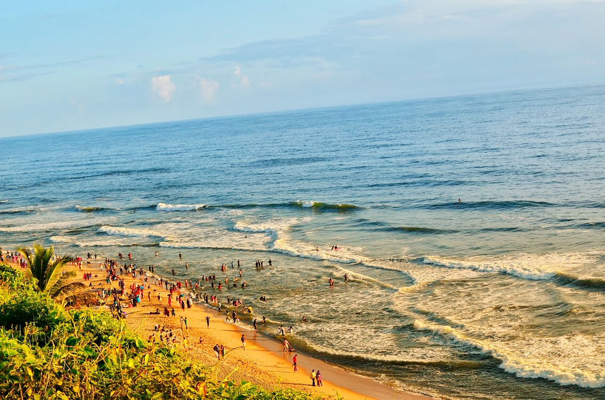
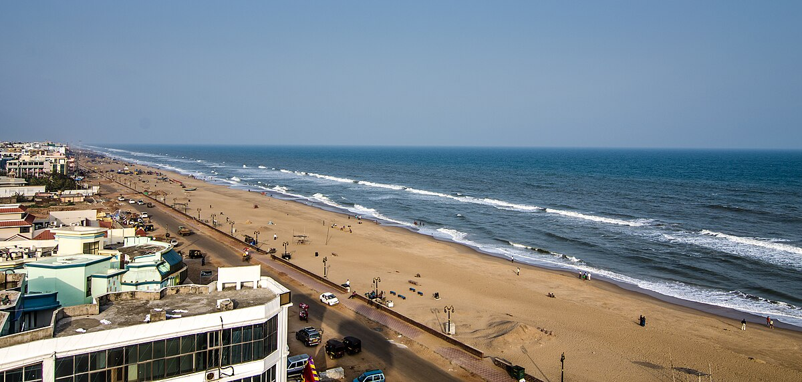
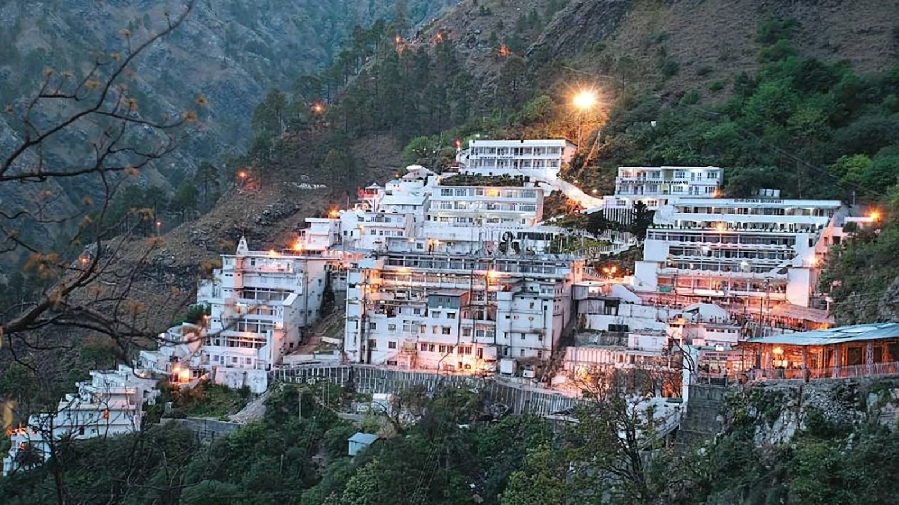
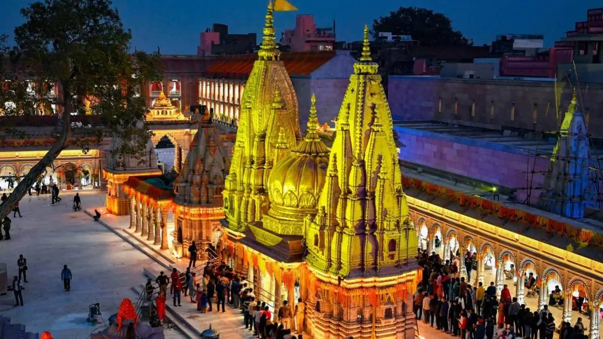
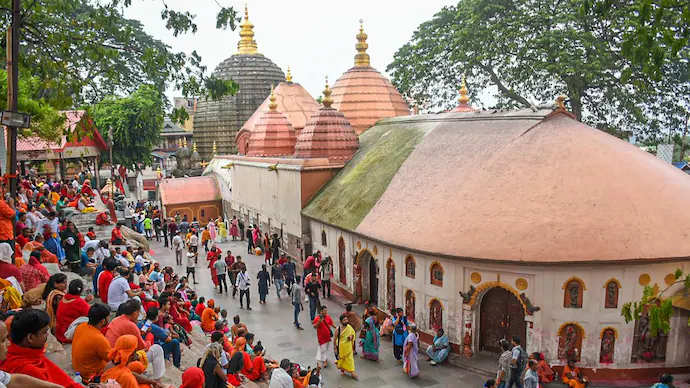

Nature
Nainital

My visit to Nainital, Uttarakhand was one of the most refreshing trips I have had. The cool weather, green hills and calm atmosphere made the place feel very relaxing from the moment I reached there. The most beautiful part of the town is Naini Lake. Boating in the lake while enjoying the cold breeze was my favourite experience. I also visited Snow View Point, from where the view of the Himalayan ranges was simply amazing. In the evening, I enjoyed walking on Mall Road, tasting local food and buying small souvenirs. Best time to visit: March to June Travel Tip: Carry light woollen clothes because nights can be cold.
For more details: Click here
Shimla

My visit to Shimla, Himachal Pradesh was a very refreshing experience. The cool weather, tall pine trees and beautiful mountain views made the place feel calm and peaceful. Walking on Mall Road in the evening, enjoying hot snacks and watching the lights of the town was one of my favourite moments. I also visited The Ridge, which offers a wide open view of the hills and is perfect for clicking photos. The overall atmosphere of Shimla made me feel relaxed and happy throughout the trip. Best time to visit: March to June Travel Tip: Carry warm clothes, as the weather can change quickly.
For more details: Click here
Kashmir

My visit to Kashmir felt like stepping into a dream. The snow-covered mountains, green valleys and cool breeze made the whole place look magical. The most beautiful experience was visiting Dal Lake and enjoying a peaceful shikara ride on its calm waters. I also explored the Mughal Gardens, which are full of colourful flowers and perfectly maintained lawns. The fresh air, friendly people and scenic views made my trip truly unforgettable. Best time to visit: April to October Travel Tip: Carry warm clothes and keep a camera ready for the beautiful views.
For more details: Click here
Beaches
Varkala

My visit to Varkala, Kerala (God's own country) was very refreshing and peaceful. The sound of waves, cool sea breeze and the beautiful cliff view made the place feel very relaxing. Walking along the cliff side in the evening and watching the sunset was my favourite part of the trip. I also enjoyed trying local food near the beach and spending quiet time near the shore. The calm atmosphere made me forget all the stress of daily life. Best time to visit: October to March Travel Tip: Visit the beach during sunset for the best views
For more details: Click here
Puri

I visited Puri, Odisha when I was in class 6, and it is one of my most memorable childhood trips. Even today, I clearly remember the calm and peaceful atmosphere of the Jagannath Temple. The temple visit felt very special and gave me a positive and spiritual feeling. I also remember spending time at Puri Beach, playing near the shore and watching the waves for a long time. The cool sea breeze, sandy beach and sound of water made the place feel very joyful and relaxing. It was a trip full of happiness and beautiful memories. Best time to visit: October to February Travel Tip: Visit the temple early morning for a peaceful darshan.
For more details: Click here
Goa

My trip to Goa with my family was one of the most enjoyable vacations I have ever had. The clean beaches, warm sunshine and cool sea breeze made the place feel cheerful and refreshing. Spending time together near the shore, walking on the sand and watching the waves was very relaxing. We also enjoyed trying local Goan food and spending peaceful evenings watching the sunset. The happy atmosphere and beautiful surroundings made the trip full of wonderful family memories. Best time to visit: November to February Travel Tip: Visit the beach early morning for calm views and less crowd.
For more details: Click here
Spiritual
Vaishno Devi

Vaishno Devi, J&K holds a very special place in my heart because I visited this holy shrine twice with my joint family. My first visit was when I was a very small baby, and the second time was when I was in class 6. Both trips were filled with devotion, family bonding and unforgettable memories. The long walk to the temple, the cool mountain air and the chants of “Jai Mata Di” created a very powerful and peaceful atmosphere. Walking together with my family made the journey feel joyful and less tiring. Reaching the temple and taking blessings gave a deep sense of peace and happiness. Best time to visit: March to October Travel Tip: Start the yatra early in the morning and carry comfortable shoes and water.
For more details: Click here
Kashi Vishwanath Temple

My visit to Kashi Vishwanath Temple in Varanasi was a very peaceful and spiritual experience. Standing in the temple complex, hearing the temple bells and chants, and feeling the calm atmosphere gave me a deep sense of positivity and devotion. After the darshan, I walked along the nearby ghats and enjoyed the holy surroundings of the Ganga river. The entire visit felt very special and is something I will always remember. Best time to visit: October to February Travel Tip: Visit early morning for shorter waiting time and a peaceful darshan.
For more details: Click here
Kamakhya Temple

I visited Kamakhya Temple in Assam when I was in class 7, and it remains one of my most memorable spiritual trips. The temple is located on the Nilachal Hill and has a very calm and powerful spiritual atmosphere. Walking through the temple complex, listening to the temple bells and prayers made me feel peaceful and positive. The view from the hilltop and the cool breeze made the entire visit very special and memorable. Best time to visit: October to March Travel Tip: Visit early morning to avoid heavy crowd and enjoy a peaceful darshan.
For more details: Click here